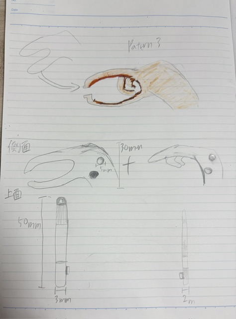
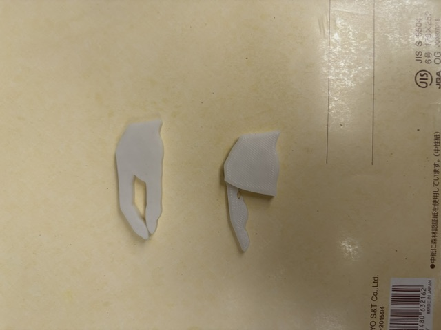
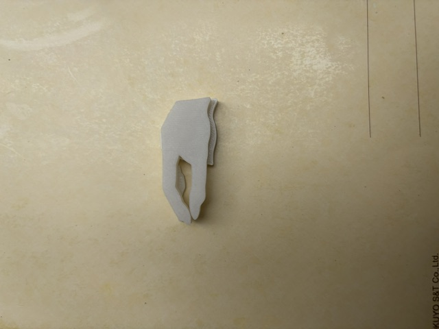
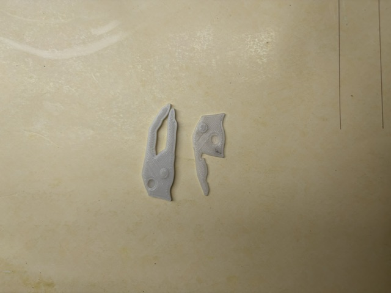
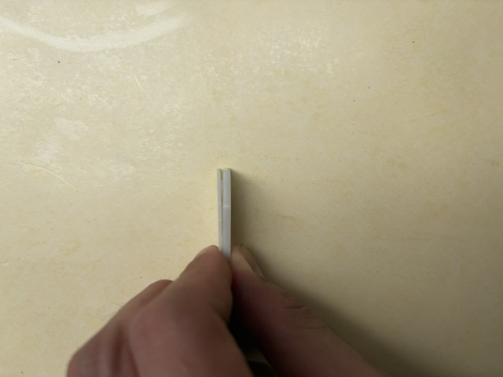
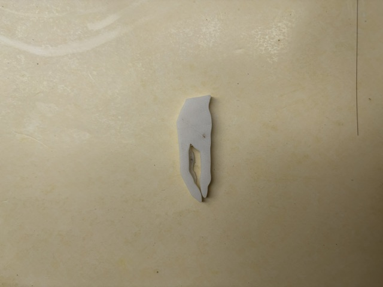

つまむをつまむピンセット
イラスト（設計図）


パターン1は手だということを一番表面に出せているが、ピンセットではない飾りの部分を指定の高さで表現できないと思いパターン2を書いた。
パターン3指の形状をピンセットの形に落とし込んだもの。
その下にあるのは、全体の寸法をどのようにするか設計したものである。
制作物の画像1（失敗）


curaでの調整に失敗し、それぞれパーツの大きさにずれが生じた。
また、飾りのパーツが1段増えてしまったので、想定とは違うものができてしまった。
制作物画像2（失敗）



サイズ設定は失敗しなかったのだが、作品自体が小さいがゆえに、うまく連結部分を形にすることができなかった。
飾りパーツは、凹を十分に深くすると薄すぎて奥が見えるほどになってしまった。
制作物画像3（完成）

やってみたいと思っていた連結という仕組みはやめ、１つのパーツとして出力した。
悔しいがもっと練習していこうと思う。
実用性よりも何かユニークなものをつくりたいと思い、アイデアを絞っているときに絵の中に同じ絵が続く「ドロステ効果」を思いついた。
「人間のつまむという行為自体をつまんでいたら...」と想像したら面白そうだったので、形にしてみることにした。
制作物ファイル
参考資料